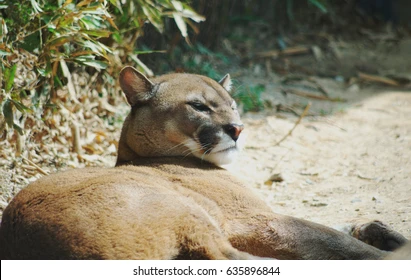
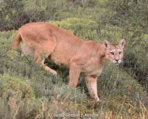

The cougar is a non-Pantherine cat species among big cats. It is more related to a domestic cat. Puma, mountain lion, catamount, and panther are similar names for cougar. This cat species is native to the Americas, in North, Central, and South America. The cougar is the terrestrial mammal, which is the most widely distributed in the Western Hemisphere. It has short, coarse hair that is rust, light brown, lemon, apricot, black, or smoke. Cougars grow up to 7 to 8 feets long.
The reality is cougars can't roar. They can only purr, growl and scream. Cougar is the largest cat who can meow and purr. Their sound is kind of cute as domestic cats.
Cougar Scream Cougar Purr Cougar GrowlThere have been some descriptions of 32 cougar subspecies. There are six subspecies of cougar, according to genetic analysis. They are:
The current valid subspecies are:
Amomg these subspecies, North American cougar is the largest cougar species in the world.
Here's a video showcasing some of the Cougar subspecies:
| Image | Name of the subspecies | Living Area |
|---|---|---|
| Costa Rican cougar (Puma concolor costaricensis) | Tropical rainforests, Cloud forests, Dry tropical forests and Mountainous regions in Costa Rica, Central America | |
| Florida Panther / North American cougar (Puma concolor couguar) | Florida panthers are found in the Everglades National Park and surrounding areas in Florida, United States. This unique subspecies of cougar has adapted to the subtropical wetlands of the region and is a protected species. These subspecies can also be found in Western Canada and Mexico | |
|  | Northern South American cougar (Puma concolor concolor) | Brazil, Colombia, Ecuador, Guyana, Paraguay, Suriname and Venezuela have various national parks and protected areas where you might be able to spot cougars, especially in the more remote and forested regions. |
| Eastern South American cougar (Puma concolor anthonyi) | These cougars inhabit the eastern regions of Brazil and Paraguay, particularly in the Atlantic Forest and Cerrado ecosystems. They are less common compared to their western counterparts, but can still be found in protected areas and remote regions. | |
| Southern South American cougar (Puma concolor puma) | These cougars live in Argentina, Bolivia, Chile and Peru. These countries offer various national parks and protected areas where you may have the opportunity to spot these elusive big cats in their natural habitat. | |
|  | Argentine puma / Central South American cougar (Puma concolor cabrerae) | These cougars can be found in Argentina and Chile |
The following map represents the habitat of cougars.
In North America, We can find cougars from:
There are about 40 cougars live in this national park.
Yellowstone National Park is a vast wilderness area in the United States, famous for its geothermal features, such as geysers, hot springs, and mudpots. It's also home to a diverse range of wildlife, including mountain lions.
These animals are elusive and solitary creatures that inhabit the park's rugged terrain. They are excellent hunters and climbers, well-adapted to the challenging environment. While sightings of pumas are not common, they do occasionally occur, especially in the backcountry areas of the park.
Find moreThere are nearly 17 - 20 cougars live in this national park.
Zion National Park is a stunning national park in Utah, USA, known for its towering sandstone cliffs, vibrant red rock formations, and the Virgin River. While it's primarily known for its geological features, the park also supports a diverse range of wildlife, including pumas.
Pumas are elusive and solitary creatures that inhabit the park's rugged terrain. They are excellent climbers and hunters, well-adapted to the challenging environment. While sightings of pumas are not common, they do occasionally occur, especially in the backcountry areas of the park.
Find more.JPG)
There are cougars in this national park.
Cougars are occasionally seen in this park, especially in the backcountry areas.
Find moreThere are 35 cougars in this national park.
This iconic park is home to a small population of cougars.
Find moreThere are approximately 100 cougars in this national park.
Grand Canyon National Park is a vast and iconic national park in Arizona, USA, renowned for its immense canyon carved by the Colorado River over millions of years. While primarily known for its geological wonders, the park also supports a diverse range of wildlife, including pumas.
Mountain lions are elusive and solitary creatures that inhabit the canyon's rugged terrain. They are excellent climbers and hunters, adapting well to the challenging environment. While sightings of pumas are relatively rare, their presence adds to the park's rich biodiversity.
Find moreIn South America, we can find cougars from:

The number of cougars in Amazon is depending on some factors:
The Amazon rainforest is the world's largest tropical rainforest, covering around 5.5 million square kilometers across nine countries in South America.
Find moreThe amount of cougars live in this national park is very low.
Los Glaciares National Park is the biggest protected area within Argentina, famous for the beauty of its glaciers and the spectacular views of the area. Included in the UNESCO World Heritage List, it forms part of the most visited places in the country.
Find more.JPG)
There are between 50 and 200 cougars in this national park. This park has the highest density of mountain lions in the world.
Torres del Paine National Park is situated in Chile.
Find moreDo you need more clarification?